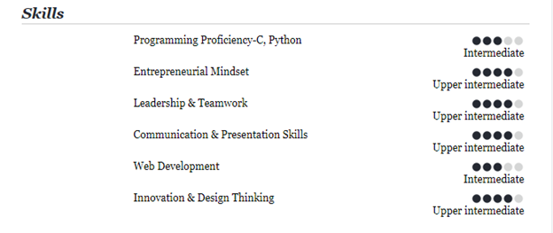
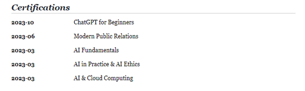

My Resume
Jiya Tomar

Summary
I am a highly motivated and proactive individual with a strong interest in in exploring new technologies and finding innovative
solutions to complex problems. I'm always seeking new opportunities to expand my knowledge and skills. I am committed to making
a positive impact through my work.
Education
- 2021-now: BMS College of Engineering
- Bachelor of Engineering(B.E): Medical Electronics Engineering
- 2019-2021: BGS National Public
School
- CBSE 12th Board Examination(PCMB): 94%
- 2007-2019: BGS National Public School
- CBSE 10th Board Examination: 96.6%
Skills

Experience
Intern Trainee, IoSys Software- 1st Oct-31st Oct'23
- Explored new technologies and approaches to streamline processes.
- Web Development - IoSys Official Website on WordPress , and Résumé-Parser
- Web, UI Design- Figma Software for Web Design of MyMarketUp Client website
- AIML - Content Generator using OpenAi for Product Emails to Customers
- Analyzed problems and worked with teams to develop solutions.
Student Intern, Apollo Hospitals-Oct'23
- Maintained strict adherence to hospital guidelines & regulations, safety and protective procedures.
- Researched and recorded biomedical and environmental data.
- Gained extensive knowledge on operation of medical hardware and software used in various Departments.
- Collaborated with multidisciplinary specialists to facilitate my research to develop solutions for addressing existing and potential issues.
- Participated in evaluation of new Hospital products and instruments as part of the recent audit.
Student Intern, Darpan Foundation- March to April'23
- User Acceptance Testing and content review of the Staging website of Darpan Foundation (darpanfoundation.in)
- Orchestrated the creation of visually engaging and impactful promotional materials that effectively communicated the Foundation's mission and achievements
- Collaborated with cross-functional teams, including marketing and event management, to gather and curate content for the videos
- Successfully transformed complex ideas and activities into compelling narratives, ensuring that the Foundation's work received well-deserved recognition.
Intern Trainee, IBM
- Acquired comprehensive knowledge of AI fundamentals through hands-on training and coursework.
- Gained practical insights into the integration of AI and Cloud Computing, understanding their synergy and real-world applications
- Developed a deep understanding of AI in practice, actively participating in projects that showcased the implementation of AI technologies.
- Demonstrated a commitment to ethical AI practices and focused on AI ethics and responsible AI deployment.
Certifications

My Hobbies
Contact Me